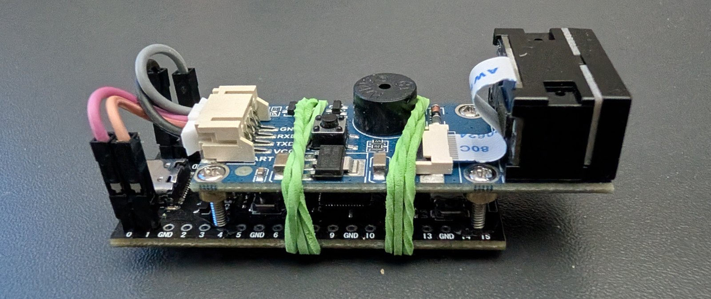
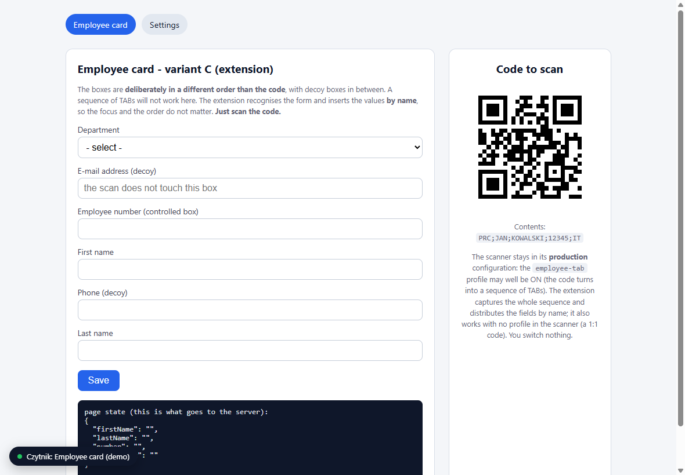
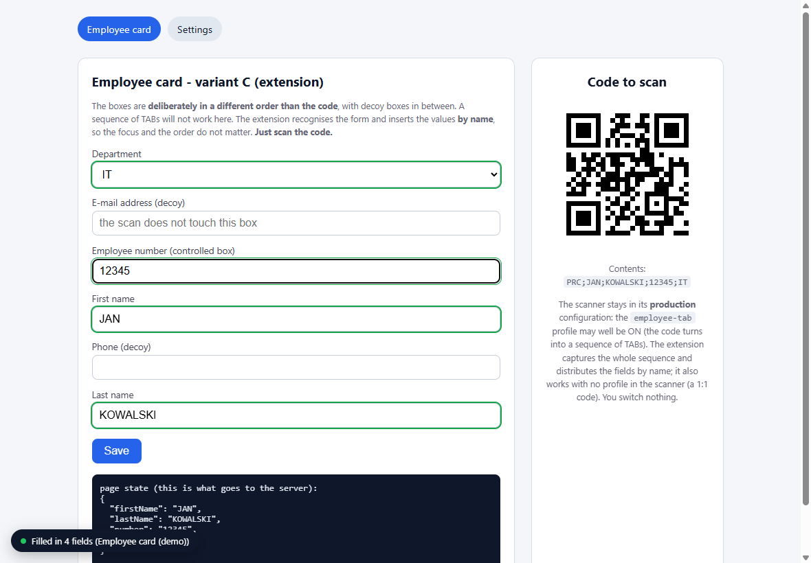
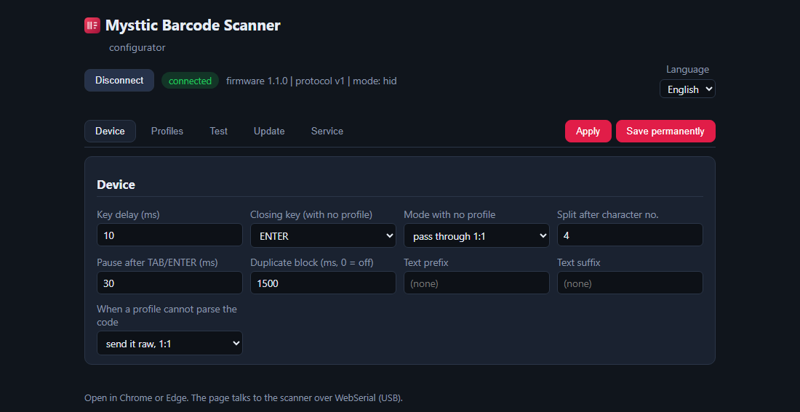

A USB barcode scanner that does not just type a number. It recognises the code, splits it into fields and puts each one where it belongs.
No drivers, no host software. The computer sees a keyboard.

Latest release: checking…
The firmware to flash, plus the configurator, the browser extension and
the Windows agent. Installing it is one drag: hold BOOT, plug the board
in, drop the .uf2 on the disk that appears.
A portable Windows application for practising with the desktop agent, with forms to scan into. Optional; the scanner works without it.
Download demoThis is firmware for a device you put together yourself, not an appliance in a box. Without the two boards under Hardware the download has nothing to run on.
The documentation and the interfaces are in English; the configurator, the extension and the agent each offer Polish as a second language.
An off-the-shelf scanner types one string and stops there. This one knows what it just read.
Plug it in and it works, on any system that accepts a USB keyboard. Nothing to install on the host, nothing to keep updated, no driver to go missing on someone else's machine.
Hold the code in front of it and it scans. No button to press, and a guard that keeps the same code from being typed twice.
The device recognises the kind of code, splits it into fields and types them in a set order with TAB and ENTER in between. GS1 codes come apart into product number, expiry date, batch and serial.
The scanner exposes a small read-only disk over USB with the configurator on it. Open that page, build the profile, save it back. Nothing is installed to do it.
Forms with decoy boxes or a shuffled order defeat a fixed run of TABs. A browser extension, and an optional tray agent for Windows applications, place the values by name instead.
Typing speed is set per profile, so an application that drops characters when they arrive too fast gets them slowly enough. Updates are one file dragged onto the board.
One QR code, four boxes, in an order the code itself does not follow.



Two boards and a cable. The scanner module is the expensive part and the one that decides which symbologies you can read.
A Raspberry Pi Pico or a clone, and it has to be an RP2040 with native USB. Boards that reach the computer through a USB-serial bridge cannot present themselves as a keyboard.
Everything here was built against a Waveshare 14810. GM65 and GM805 behave the same way and take the same configuration codes. Four wires to the board, UART crossing over.
A charge-only cable is the most common reason nothing happens. A push button and an LED are optional, for factory reset and status.